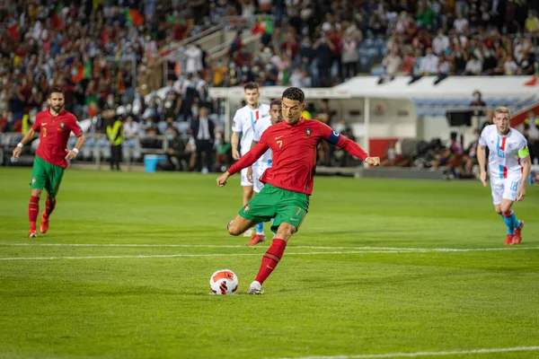
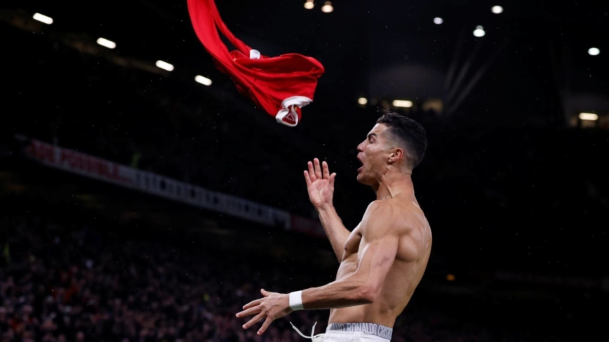
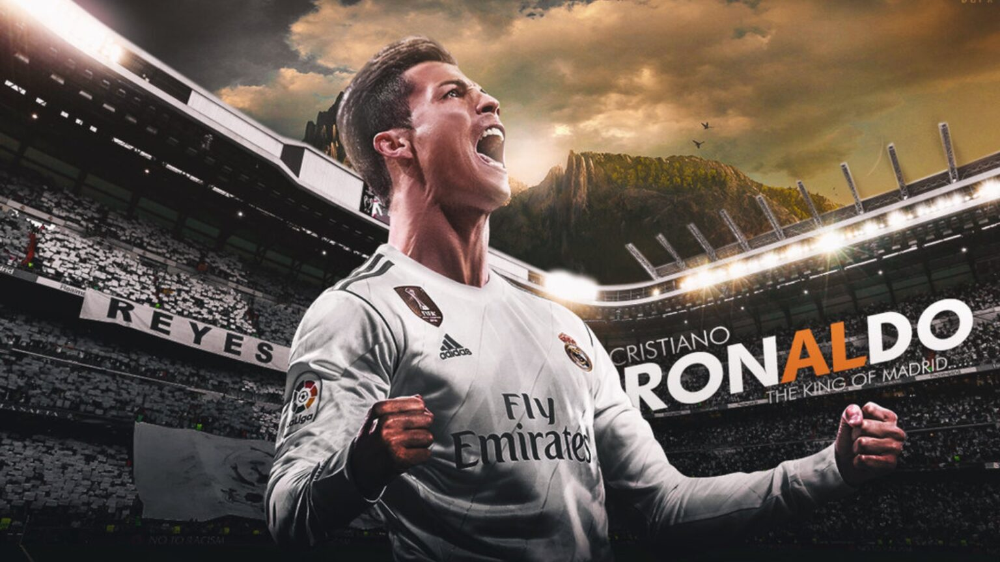
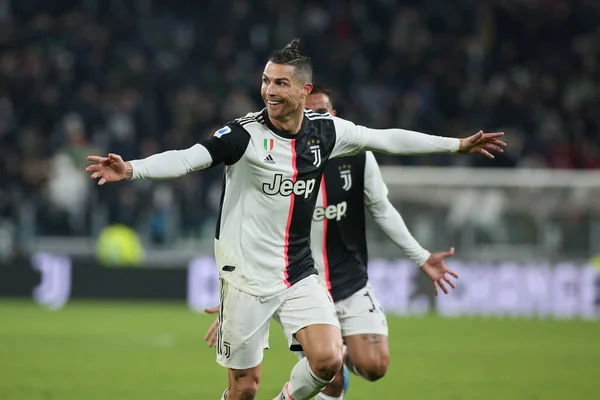

Sa carrière en Club :
Le Sporting Club de Portugal (1997-2003) :
Cristano Ronaldo est repéré et recruté des l’âge de 11 ans par le Sporting club de Portugal. Il impressionne tout de suite par sa percussion et sa vitesse. Ses performances sportives sont notables mais son comportement pose problème. Il a même eu une vive altercation avec une de ses professeurs qui s’est moqué de son accent madérois et de la situation financière de sa famille. Toutefois, cela va s’améliorer par la suite, et il joue à toutes les catégories d’âge du club et est souvent aligné contre les joueurs de deux à trois ans son aîné. C’est à seize ans qu’il débute avec l’équipe professionnelle pour quelques matches amicaux.
Il fait ses grands débuts dans le championnat portugais le 29 septembre 2002 à l’âge des dix-sept ans face à Moreirense. Il se fait remarquer au cours de ce match en marquant à deux reprises. Il joue vingt cinq matches lors de sa première saison et marque trois buts en championnat. Il inscrit également deux buts en trois matchs de Coupe du Portugal et fait ses débuts en Ligue des champions contre l’Inter de Milan. Lors de l’inauguration du nouveau stade du Sporting, le stade Jose Alvalade XXI, son club affronte Manchester United, où Cristiano fait une prestation remarquable qui va faire basculer sa carrière et le propulser en premier league.

Manchester United (2003-2009) :
La victoire du Sporting sur Manchester United lors de l’inauguration du stade Alvalade XXI et l’excellente prestation de Cristiano ont précipité sa signature au club des diables rouges.
Cristiano s’engage donc le 12 Aout 2003 avec les red Devils pour 15 millions d’euros. Il endosse le dossard numéro 7 que des légendes du club ont porté avant lui notamment Booby Charlton, George Best, Eric Cantona et David Beckham.
Il est titularisé pour la première fois en premier league face à Bolton. Il se signale par des gestes techniques réussis et provoque même un penalty. IL marque son premier but sous le maillot mancunien contre Portsmouth sur coup franc direct en novembre de la même année. Son premier trophée en Angleterre est une FA Cup remportée devant Millwall sur la marque de 3 à 0. Il ouvre le score de la tête lors de cette finale et contribue largement à la victoire des siens. Il fête son premier but en ligue des champions face à l’équipe hongroise de Debrecen lors des préliminaires de la saison 2005-2006.
En 2007, il gagne le championnat et est élu meilleur joueur du royaume avec 17 buts et 14 passes décisives en premier league seulement.
La saison 2007-2008 est celle de la consécration. Cristiano est devenu plus fin et plus puissant et les bonnes performances suivent naturellement. Il finit d’ailleurs la saison comme meilleur artificier de premier league avec 31 buts en 34 matches de championnat et de la ligue des champions avec huit buts en onze matches de coupe d’Europe. Il est alors élu meilleur joueur par ses pairs, le public et la presse pour la deuxième fois d’affilée. Il remporte également le ballon d’or devant Messi et Fernando Torres. En 2009, il gagne le championnat pour la troisième fois consécutive avant de rejoindre le Real de Madrid.

Real Madrid (2009 à 2018) :
En juin 2009, après deux ans de rumeurs et de spéculations, Cristiano signe au Real Madrid pour six ans et la somme record de 94 millions d’euros devenant alors le joueur le plus cher de l’histoire du football. Sa première saison au Real est mitigée avec seulement neuf buts en sept matches et une blessure qui l’a éloigné des terrains pendant deux longs mois.
Durant la saison suivante, il devient le premier joueur à atteindre le plus rapidement la barre des cinquante buts en Liga espagnole. Il termine aussi meilleur buteur du championnat avec quarante réalisations.
En 2011-2012, malgré une année vierge de titres sur le plan national, il devient tout de même le premier joueur à marquer contre toutes les équipes de la Liga.
La saison 2013-2014 est celle de la dixième coupe d’Europe du Real Madrid. Cristiano et les siens battent leur rival madrilène en finale 4-1. Cristiano marque le quatrième but de son équipe sur penalty et termine la compétition avec 17 buts devenant ainsi le meilleur buteur de la ligue des champions sur une saison.
En 2015, il termine encore meilleur buteur de la Liga et soulier d’or européen.
En mai 2016, il remporte pour la troisième fois la ligue des champions dont la deuxième fois avec le Real.
En 2017, il réalise le doublé Liga et ligue des champions. Il gagne ainsi pour la quatrième fois le trophée européen après avoir offert au club madrilène le championnat au terme d’une intense lutte avec le rival catalan. Il devient par la même occasion, le premier joueur à marquer dans trois différentes finales dans la formule actuelle de la ligue des champions.

La magie européenne ne s’arrêtera pas là, puisqu’il remportera la coupe aux grandes oreilles pour la cinquième fois en 2018. Il entre ainsi un peu plus dans la légende de la plus prestigieuse compétition de football au monde à travers un triplet légendaire (2016, 2017, 2018). Il sera également gratifié du trophée du meilleur buteur de C1. La saison 2018 sera en outre marquée par les adieux de CR7 à la Casa Blanca, où il aura passé 9 années de sa carrière. Un vide considérable se sera créé dans le cœur des fans de la maison blanche voyant ainsi partir leur idole vers de nouveaux horizons.
Juventus (Depuis 2018) :
Horizons aux couleurs vertes, blanches et rouges, puisque CR7 posera ses valises en Italie pour 4 nouvelles saisons. La saison 2018-2019 sera marquée par les premiers pas de CR7 en Série A. Il n’aura cependant pas été en dessous de ses performances habituelles et terminera la saison avec un total de 28 buts en 43 matchs toutes compétitions confondues. Il sera par la même occasion sacré Champion d’Italie.
À noter que l’exploit marquant de « la machine » durant cette saison est la qualification de la vieille dame en quart de final de la Ligue des Champions. Après un match aller perdu 2-0 face à l’Atlético de Madrid, CR7 permettra à la Juve d’obtenir son ticket en inscrivant à lui tout seul 3 buts lors du match retour. Il remportera également cette année la Ligue des Nations avec le Portugal.
Cette saison (2019-2020), CR7 « Air Jordan », comme à son habitude, a étonné la planète football. Bien qu’il ait enregistré des débuts mitigés en Série A, le magicien portugais a très vite repris le taureau par les cornes et s’est lancé sur le chemin de nouveaux records.
Voir la liste des équipes actuelles de Cristiano Ronaldo.

Pour plus d'information sur sa vie privée / son carrière internationale click sa vie privée / son carrière internationale